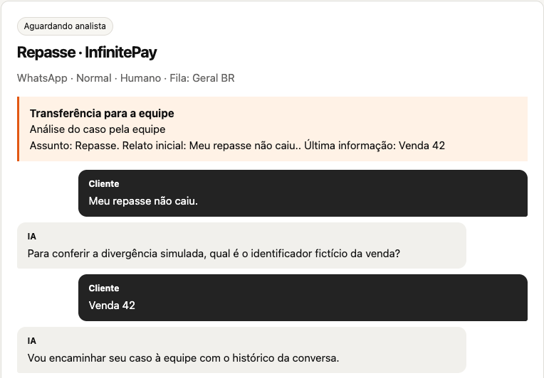
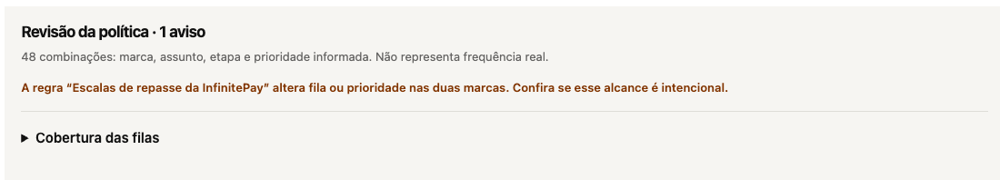

Mensagem + outbox
Um commit guarda o conteúdo e a intenção de envio. O worker pode retomar o pendente.

CentralDa mensagem do lojista
à resposta e à fila humana.


“Meu repasse não caiu.”

PostgreSQL guarda o estado. Kafka transporta os eventos.
Uma regra de repasses
também afetaria a JIM.
Fila e prioridade efetiva
definidas por política.

14 ms para abrir. 14,252 s até a primeira resposta. Ambos p95.
Rodadas sequenciais com históricos diferentes. O gráfico não isola o ganho de cada ajuste.
Fonte: CARGA-SUSTENTADA.md · retest-400-parallel.json · retest-400-indexed.json
400 aberturas/s · 5 min · 2 mensagens por cliente · 16 analistas simulados
| Métrica | Antes | Após otimizações |
|---|---|---|
| Primeira resposta · p95 | 123,9 s | 707 ms |
| Respostas pendentes no corte | 32.485 | 0 |
| Leituras completas de histórico | 1.659.152 | 119.857 |
chegadas não enviadas pelo gerador.
A rodada ainda reprovou.
Consulta leve + espera adaptativa + SQL agrupado + offsets em lotes. Ganho do conjunto.
Drenagens diferentes; antes, o p95 excluía respostas pendentes. Fonte: CARGA-MISTA-OTIMIZADA.md
Reteste com 360 mil casos encerrados de histórico sintético.
Ana + Bruno → mesmo ID da lista
Próximo elegível → reserva no PostgreSQL
FOR UPDATE SKIP LOCKEDMarca, equipe e prioridade.
Atribuição e auditoria na mesma transação.
conflitos HTTP 409
Listagem p95: 8,92 → 11,02 ms · espera dos urgentes p95: 398,68 → 364,68 ms.
Fonte: HISTORICO-E-FILA.md · central-history-dispatch-snapshot.json
conversas abertas e encerradas após a drenagem
Backend real, teste local. Agente, canais e analistas simulados.
Histórico: versão anterior. Nova política: banco vazio. Sem garantia de escala em produção.
Um commit guarda o conteúdo e a intenção de envio. O worker pode retomar o pendente.
ID do evento, efeito e auditoria na mesma transação. Revisão e estado protegem contra respostas obsoletas.
Histórico, resumo e decisão versionada acompanham o chamado.
Teste: agente desligado e religado, reentrega explícita e retorno atrasado.
Fontes: results/faults.json · results/policy-regression-faults.json
Casos encerrados tomavam os lugares visíveis. A consulta passou a filtrar estados ativos antes de paginar.
Maior acúmulo observado na ponte sem offset confirmado. Pools e processamento SQL foram investigados.
Leituras de histórico no reteste. Status leve e espera adaptativa reduziram consultas completas.
O ganho posterior combina mudanças na aplicação e no padrão de consultas.
Fontes: CARGA-MISTA.md · CARGA-MISTA-RETESTE.md · CARGA-MISTA-OTIMIZADA.md
A API aceitou 255 casos. Todos aguardavam a primeira resposta.
Na consulta feita após o comando de inicialização retornar, os 255 casos já tinham resposta.
Quatro assuntos, até cinco mensagens para a IA e todas as conversas encerradas.
573 ms é o instante de observação, não a latência individual de cada resposta.
Perfil separado, até 50 novas conversas/s. Fonte: PERFIL-VARIADO.md
Conferir fila, prioridade e versão contra expectativas independentes do motor.
Repetir o perfil de cinco minutos, conferir atribuições e drenar todos os eventos.
PostgreSQL e Redpanda de nó único. Não mede produtividade humana, LLM real ou alta disponibilidade.
Histórico sintético acumulado não equivale a seis meses de operação contínua.
Métodos, comandos e dados brutos em results/ e README.md do repositório.